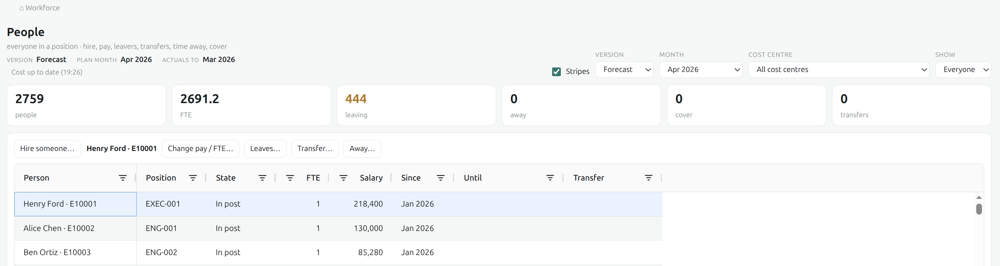
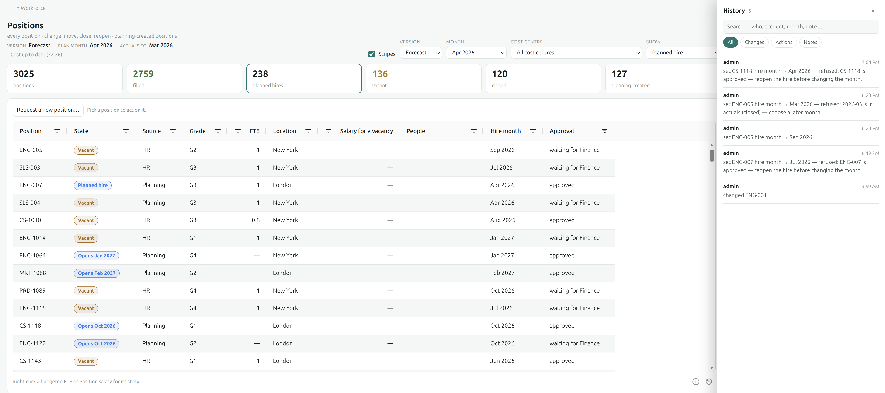
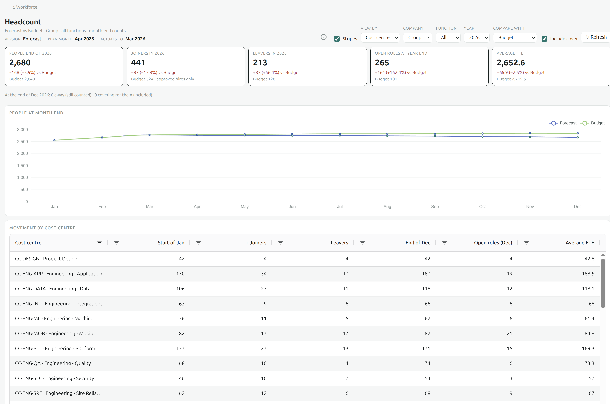
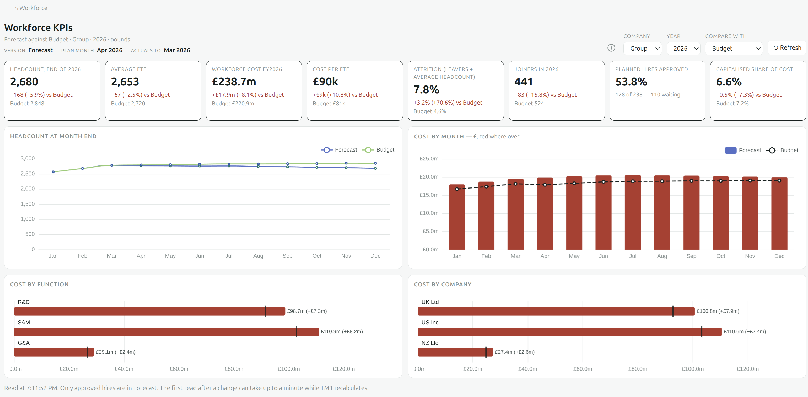
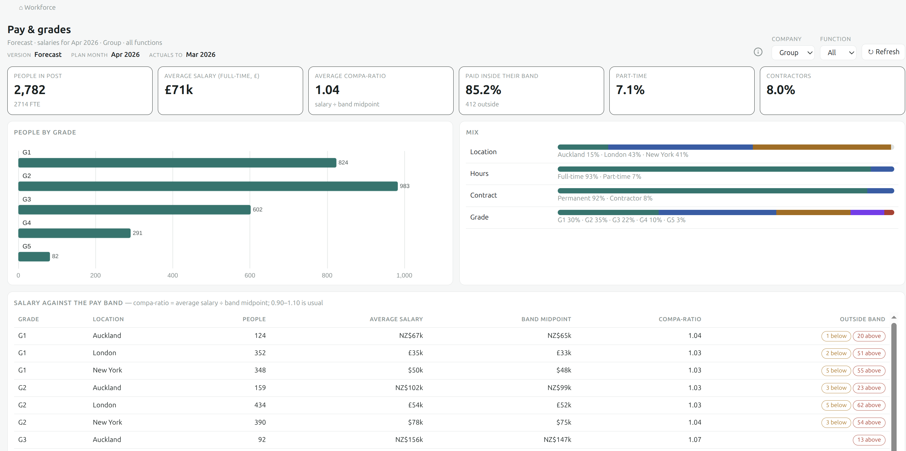

A different UI
A Lens is a planning screen built as an HTML page, running on a TM1 model. This article shows what they can do, using a Workforce Planning application built on TM1 v11.
How it fits together
through PAW
- The page is a single HTML file. It is stored inside the TM1 model (TM1 Applications), so it lives and travels with the model. The source is also kept in git, so every version can be compared and rolled back.
- The Lens kit is a shared set of components — charts, the grid, the pivot, cards, forms, History, who is on the page. The grid and pivot are the same ones the IDE’s View Editor uses. A change to a component reaches every page.
- The Lens server passes each request to TM1 as the signed-in user, so TM1 security decides what they see and change. A page must declare which processes it runs; anything else is refused.
- TM1 holds the logic. Calculations are in rules and TI. Every workflow change — hire, transfer, match, approve, set a hire month — is a TI process that checks it and refuses with a reason, written to a small Lens Messages cube the page reads back. Planning input, like assumptions, is an ordinary cell write under TM1 cell security.
- The pages are built by describing them to an AI, which uses the TM1 MCP server — tools to read the model, build processes, save a Lens — under the same rules.
See it: Workforce
The application is a set of pages for the workforce plan: the positions, the people in them, approvals, matching, cost and headcount. These are the main screens.
Home
The home page shows what needs the person’s attention, four headline figures, and the pages they can open. Which pages appear depends on the person’s TM1 group: HR, Finance or cost-centre manager.

People
The People page lists everyone holding a Position, with their cost centre, FTE and pay. The cards across the top count the groups, and clicking one shows just that group.
Every change to a person starts from their row: hire, pay or FTE change from a month, leaver (with an optional backfill), transfer, time away, cover. When you hire someone who already holds a Position, the page asks whether it is a transfer or a move to another company, so the same person is not counted twice.

Positions
The Positions page lists every Position — filled, vacant, planned hire, closed, or created by planning. Click a card to see only those.
You set a hire month directly in the table on an empty Position. TM1 checks it and refuses, with the reason, if someone is already in the Position that month or the Position is closed. Each row shows its approval status — waiting for Finance, or approved. From the same row you change grade, FTE, location or salary from a month, move the Position to another cost centre or company, close or reopen it, or request a new Position. Every change is in History, refusals included.

Assignments, handover and transfers
A Position and the person in it are separate. The Position is the job — cost centre, grade, FTE, location. The person is linked to it by an assignment: start month, end month, FTE share, and that person’s salary. So two people can share a Position, or overlap during a handover; someone can cover while the holder is away; a transfer ends one assignment and starts another, and the history stays. Cost is calculated per assignment, so the right salary lands in the right months.
On the People page every change is a change to an assignment; on the Positions page you see who holds each Position in a month.
When someone is leaving, their replacement can start before they go. Hire the replacement into the same Position, choose handover, and set the months they overlap. For those months the Position shows In handover rather than over-filled, both people are counted and both are costed, so the cost of the overlap is in the plan. When the leaver’s assignment ends, the Position is back to one person. Without the handover mark, two people in a one-FTE Position would show on Needs attention as over-filled.
From a person’s row, choose Transfer, pick the new Position and the month it starts. TM1 ends the current assignment the month before and starts the new one — the same person, counted once, with their history kept. If the new Position is in a different company, it is a company move: pay and tax follow the new company’s rules from that month.
Set someone’s leaving month and, in the same step, optionally plan the replacement. Someone on leave stays counted; cover can be added for those months.
Approvals and matching
Hire approvals is Finance’s list of every planned hire, across all cost centres, still waiting — each with what it will cost a year and this year. Tick the ones to approve and click Approve. TM1 checks the person is in Finance. Until a hire is approved it is not in headcount or cost; if someone later changes its hire month, the approval is cleared so Finance sees it again.

When HR creates a new Position, it is linked to the planned hire it fulfils, so the hire counts once. The page suggests matches, marked strong or possible; a person confirms each one. A match can be undone, and the planned hire goes back to how it was.
Needs attention and assumptions
The control checks, each with its rows: Positions holding more FTE than they have, people over 1.0 FTE across Positions, and anyone in a Position that is closed that month. Click a card to see only that check.
Assumptions: merit, promotion and bonus pool by month, applying from a chosen month on.
Budget to forecast
A waterfall from budget to forecast, broken down by FX, people, pay rates, bonus and one-offs, with the function table under it and every cost centre that moved down the right. Click a step and the cost centres re-rank by that driver; click a cost centre to see its own bridge.

Headcount by location
Positions are owned by cost centres, but people also want them by city, country and region. TM1 can hold a second hierarchy on the same dimension, so the same Positions roll up a different way with no copied data. The By Location hierarchy is built by a TI process from each Position’s Location attribute, and runs automatically after every HR load and recalculation — nobody maintains it by hand. Totals by location equal the company totals. On the Headcount page you switch between by cost centre and by location; in the IDE you can create one from any attribute with + Hierarchy → From an attribute.

Other screens
The rest of the application uses the same parts: a monthly cost view, the management KPIs, a cost-centre review and the pay and grade mix.




Why it works
The screens share a small set of behaviours. They are the reason the application feels like one place to work rather than a set of reports. The layout is placed for the job, and adjusts to the screen down to a phone.
A cost-centre bar opens that cost centre’s bridge. A card filters the table below, and clicking it again clears the filter. On the report pages, a waterfall step re-ranks the cost centres by that driver.
Status appears as a pill in a cell; approved rows lock; cells you typed but have not saved are highlighted. Right-click a cell for how it is calculated, who changed it, and notes.
When the page opens, its lists are built from the model: only the months still open, only the cost centres in the user’s function.
£k, £m, “Sep 2026”, +/− signs — chosen per column, not typed into the data.
Each step — hire, match, approve — uses the row already selected. Forms fill the process parameters; if TM1 refuses, the page shows its reason.
The home page shows each person the pages for their role. Every read and write runs as the signed-in user under TM1 security.
History shows every action on the page — who, when, refusals included. The page also shows who else is on it.
The pages are built by describing them to an AI, which uses the TM1 MCP server to read the model, build processes and save a Lens under the same rules.
Cost status. After a change, the page shows that cost is being recalculated, and updates when it is done.
Next
The next pieces are not in the application yet.
- Warnings. The change can go ahead, but the page flags it first, with Go ahead or Cancel: a hire that takes a cost centre over budget; a salary above its pay band; a leaver with no backfill; an HR start date months after the planned hire month; a gap between a leaver and the replacement.
- Card drill. A card filters the table on its page; a small arrow on the card opens the page with the full detail, already filtered.
Appendix: the workforce model
For TM1 readers: the parts of the model behind the screens.
FX
Each company plans in its own currency: UK Ltd in GBP, US Inc in USD, NZ Ltd in NZD. Cost is held in local and reporting currency. Reports are in pounds, converted at the forecast rate.
Moves
A cost-centre move is dated: the Position sits under the new cost centre from that month, and the earlier months stay under the old one. A company move is not a transfer of the Position. It is a leaver from the old company and a hire into a new Position in the new company, which brings its own tax rules; the old Position closes.
Tax on the person
Payroll tax is held per person in WFP Person Tax, not on the Position. A transfer within the same company carries the person’s year-to-date earnings to the new Position. A company move does not: the person leaves the old company and is hired into the new one, so the payroll year restarts.
Tax year and employer tax
Earnings are taxed by tax year, not by calendar year. UK and NZ start in April; US-NY in January. Thresholds and caps apply to earnings within that tax year. Obl 2026 is the opening balance period: it holds each person’s earnings and tax so far at the start, and is never costed.
This matters because employer tax is calculated on year-to-date earnings. A month’s employer tax depends on the months before it, not just that month’s salary. The UK employer NI and the US Social Security wage cap are examples. A mid-year transfer carries the history that decides the rate; a company move starts it again.
| Jurisdiction | Tax year starts | Employer payroll tax in the model |
|---|---|---|
| UK | April (6 April – 5 April) | 13.8% above £9,100 |
| US-NY | January | 9.0% up to $168,600; 1.45% above |
| NZ | April | 1.6% up to NZ$142,283; nothing above |
In a monthly model April is tax month 1, as payroll counts it. The bands are data in WFP Tax Bands, by jurisdiction.
Employee tax and net pay
Employee income tax and net pay are not a company cost. They are in the model for payroll cash forecasting; Employer Payroll Tax is the employer cost.
Costing in TI
The monthly cost is calculated in TI, not in rules. It runs across every assignment and every month, so it is too heavy to recalculate in a rule; rules are kept for the on-costs planners need to see change live. Base cost is built per assignment, month by month, and payroll tax is run per person. On-costs (pension, bonus, benefits) are rules on Base. Each action calls WFP Request Recalculation; the WFP Recalculate Cost chore runs WFP Recalculate If Needed every five minutes and updates cost when something is marked. On the full model, Base + tax + post takes about 90 seconds. The pages show Cost up to date or Cost updating… while it runs.
People mechanics
- Assignment. A person holds a Position from a start month to an end month, at an FTE and salary; pay and tenure live on the assignment, not the Position. Main section.
- Handover. A replacement starts before the leaver goes; both count and are paid during the marked overlap. Main section.
- Cover. A second person covers while the holder is away; cover is flagged and only allowed while someone is away. Main section.
- Time away. The person stays in headcount and is paid the absence pay %; cover can be added for those months. Main section.
Control checks
These run as assertions and on the Needs attention page:
- Nobody over 1.0 FTE across Positions (Over-booked).
- No Position holding more people than its FTE (Over-filled), except a marked handover or cover while someone is away.
- Nobody assigned to a Position in a month it does not exist (Person In Closed Position).
- No assignment record that ends before it starts (Bad Span).
- No HRIS Position linked to more than one TBH; no matched TBH counting in an open month.
- Every new HR Position in an open month is matched or flagged Unplanned; every approved TBH past its hire month is matched or flagged Late hire.